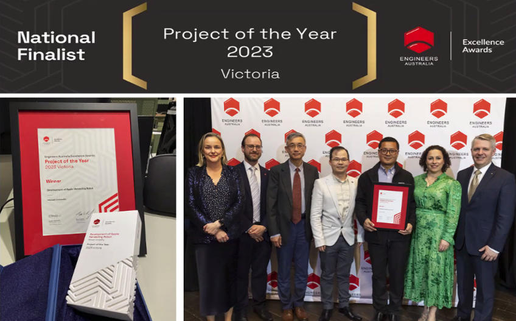
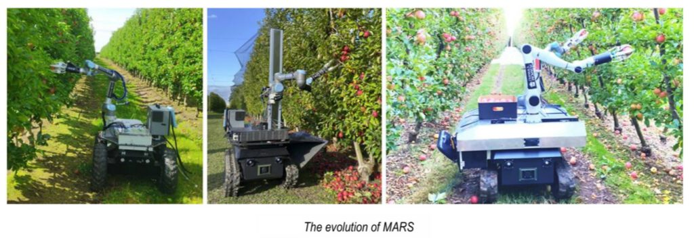
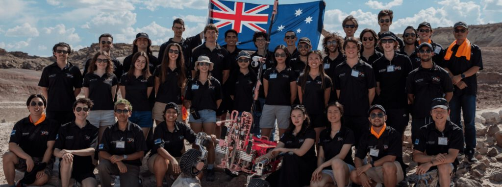

机器人能够像人一样采摘苹果吗？未来机器人如何走进家庭、医院、农场，甚至登陆月球、探索火星？
6月25日，墨尔本中国高校校友会联盟（MCUAA）成功举办机器人科技专题讲座，邀请 Monash University 机械与航空航天工程学院陈超教授担任主讲嘉宾，为广大校友带来了一场兼具学术深度与工程实践的精彩分享。
讲座从苹果采摘机器人的研发实践为切入点，探讨机器人与人工智能融合发展的未来趋势，以及它们如何重塑人类的生产方式、生活方式和社会结构。通过真实农业机器人案例，分享机器人从实验室走向真实世界面临的挑战，并进一步展望未来机器人在农业、城市、服务与产业中的广泛应用，共同思考人与智能机器协同发展的未来格局。
整场讲座内容丰富、生动精彩，让听众深刻感受到人工智能与机器人技术正以前所未有的速度重塑人类社会。
从科研创新到产业应用的机器人专家
讲座开始前，MCUAA主席范志良博士向与会嘉宾介绍了主讲人陈超教授。
陈教授现任 Monash University 机械与航空航天工程学院教授，同时担任澳大利亚研究委员会（ARC）智慧农业科技转化与研究中心主任。他先后获得上海交通大学学士学位、麦吉尔大学硕士及博士学位，并曾在多伦多大学从事博士后研究工作。
多年来，陈教授始终活跃于机器人与智能系统研究的国际前沿，长期致力于非结构化复杂环境下的机器人研究与产业应用。他的研究领域涵盖机器人设计、建模、感知与控制，并融合微分几何、群论、约束分析、深度学习及强化学习等前沿理论与方法，推动机器人技术从实验室走向真实世界应用。
其团队研发的苹果采摘机器人在智慧农业领域取得突破性进展，并荣获澳大利亚工程师协会（维多利亚州）2023年度卓越项目奖。这一成果不仅体现了先进机器人技术的创新能力，也为农业自动化与未来食品生产提供了重要解决方案。
此外，陈教授还是 Monash Nova Rover（月球/火星探测车团队）的学术创始人与指导教师。该团队在国际火星车竞赛中屡获佳绩，为澳大利亚培养了大批优秀工程人才。

机器人技术的发展前沿
讲座伊始, 陈超教授为大家系统梳理了机器人技术的发展历程及国际前沿方向。他指出，机器人技术是一门高度交叉融合的学科，涵盖机械工程、电子工程、自动控制、计算机科学、人工智能、机器视觉等多个领域。
在讨论机器人与真实环境交互的挑战时，陈教授重点介绍了著名的“莫拉维克悖论（Moravec’s Paradox）”。该理论指出：对人类而言极其简单的任务（如行走、抓取水果、避障、空间判断等），对机器人而言却往往极其困难；而计算、逻辑推理等高层智力任务反而更容易实现自动化。其根本原因在于，人类在漫长进化过程中已形成高度复杂的感知与运动能力，而机器人必须依赖算法、传感器与控制系统才能模拟这些能力。因此，制约机器人发展的关键并非算力，而是如何在复杂真实世界中实现可靠、安全与鲁棒的智能行为。
过去几十年，机器人主要应用于汽车制造等结构化工业场景。然而，随着人工智能、大数据、高性能计算与传感器技术的快速发展，机器人正逐步从传统自动化设备演变为具备环境感知、自主决策与智能执行能力的新一代智能系统,如交通运输中的机器人出租车、无人机快递服务以及人形机器人。陈教授特别指出，未来机器人不仅要“看得见、会思考、能行动”，更重要的是能够适应复杂、开放且不断变化的真实环境，实现安全、高效的人机协同。
结合近年来生成式人工智能的发展，陈教授认为机器人产业正在迎来新的技术拐点。未来机器人将不仅仅承担重复劳动，更有望成为人类在现代农业、智能制造、医疗康养、灾害救援及深空探测等领域的重要合作伙伴。
让机器人走进真实果园
随后，陈教授重点介绍了团队近年来最具代表性的研究成果——Monash Apple Retrieving System（MARS）苹果采摘机器人。
陈教授首先分析了现代农业面临的全球挑战：全球人口持续增长,可耕种土地不断减少,农业劳动力严重短缺,气候变化导致农业生产风险增加。其中，澳大利亚果园长期存在采摘季劳动力不足的问题，大量成熟水果因缺乏人工无法及时采摘，不仅增加成本，也造成巨大浪费。因此，利用机器人辅助采摘已成为全球农业自动化的重要研究方向。
陈教授介绍，MARS项目始于2017年，团队历经多年持续迭代。机器人平台曾先后尝试轮式底盘、履带式底盘，又重新优化回轮式平台；机械结构也从单机械臂发展到双机械臂协同采摘，不断提升工作效率。

陈教授详细介绍了MARS集成的多项关键技术。
智能视觉系统: 机器人利用AI视觉算法快速识别成熟苹果。即使在树枝遮挡、阳光直射、阴影变化甚至雨天环境下，仍能够保持较高识别准确率，并快速完成目标定位。团队还创新提出了”手指相机（Finger Camera）”技术。传统机器人只能看到苹果外部，而安装在机械手指上的微型相机能够在抓取过程中观察苹果背面，不仅可以判断是否存在遮挡，还能够进一步评估水果品质。
柔性机械抓手: 机器人采用自主研发的柔性抓手。抓手能够根据苹果形状自动调整受力，并通过压力传感器实时检测接触状态，既保证抓取稳定，又尽可能减少果实损伤。针对采摘失败案例，团队分析发现主要原因包括：树枝影响,苹果之间相互遮挡,果实打滑,树叶干扰, 随后利用人工智能、视觉感知及控制优化持续改进系统性能。
自主规划与动态采摘: 为了提高效率，团队还研究了动态水果采摘技术。 机器人利用SLAM（同步定位与地图构建）技术，在全球坐标系下建立果园地图，实现水果位置的持续更新，使机器人能够边移动边完成采摘，而无需频繁停下来重新定位。这一技术显著提升了机器人在真实果园中的连续作业能力。
凭借MARS项目，团队荣获2023年Engineers Australia Victoria Project of the Year（澳大利亚工程师协会维多利亚州年度最佳工程项目）。陈教授表示，团队下一步将成立初创企业，加快机器人商业化进程，希望未来真正服务澳大利亚农业生产。
ARC智慧农业研究中心
陈超教授介绍了由他担任主任的澳大利亚研究委员会（ARC）智慧农业研究中心（Cyber-Farming for Sustainable and Resilient Agriculture）。该研究中心旨在利用机器人、人工智能、自动化、物联网和数字孪生等先进技术，推动澳大利亚农业向数字化、智能化方向转型，提升农业生产效率和附加值，实现更加可持续（Sustainable）和具有韧性（Resilient）的现代农业体系。
研究中心获得了澳大利亚研究委员会（ARC）为期五年约500万澳元的资助，同时吸引了产业合作伙伴超过600万澳元的配套投入。这一项目汇聚了Monash University、Griffith University、UNSW Sydney、Curtin University、La Trobe University，以及加拿大多伦多大学（University of Toronto）、美国宾夕法尼亚州立大学（Penn State University）、英国Harper Adams University等多所国际知名高校和科研机构，建立了跨学科、跨国界的合作平台，共同推动智慧农业技术创新与成果转化。
陈教授表示，研究中心不仅关注单一农业机器人的研发，更希望构建完整的智慧农业生态系统，使澳大利亚在全球智慧农业技术创新领域保持领先地位，进一步带动产业投资、国际合作和科研成果商业化。
Monash Nova Rover——世界舞台上的青年力量
近年来，蒙纳士大学 Nova Rover 团队持续参加国际大学生火星车挑战赛（University Rover Challenge，URC）。这一项目不仅是一项机器人竞赛，更是培养未来机器人工程师的重要平台。学生通过跨学科协作，将机械设计、人工智能、控制系统、电子工程与软件开发等多领域知识有机融合，在真实工程项目中快速成长。
比赛通过模拟未来火星的极端环境，深度考验了机器人在复杂地形中的自主行驶、样品采集、设备维修及科学探测等全方位能力，对自主导航、结构设计、控制算法和多模态感知提出了极高要求。
蒙纳士大学 Nova Rover 团队在这一极具挑战性的国际赛事中表现卓越。作为团队的指导教授，陈超教授带领队员围绕火星车系统的设计与性能展开持续优化与技术迭代。团队在2022、2023和2026年的赛事中，三度从全球110余支参赛队伍中突围，勇夺总决赛亚军。 这一辉煌成果不仅有力见证了高端工程技术人才的培养成效，也彰显了澳大利亚高校在国际机器人前沿创新与工程实践领域的顶尖实力。

现场问答与深度交流
讲座最后进入互动交流环节。在MCUAA理事、天津大学墨尔本校友会会长刘莘女士的主持下，现场听众围绕机器人产业发展、人形机器人、农业机器人商业化、养老机器人、钢铁行业机器人应用以及机器人创业等话题积极提问。
针对大家的踊跃提问，陈教授进行了深入浅出的细致解答。他首先剖析了全球农业机器人领域的发展现状，并阐述了自身团队与国际领先企业在技术路线上的差异化布局。陈教授指出，尽管不同应用场景的需求千差万别，但机器人感知、规划、控制等底层核心技术具有高度的通用性，关键在于深挖行业痛点进行针对性优化。 谈及未来产业前景，他强调，机器人技术不仅能有效缓解劳动力短缺问题，更有望颠覆传统产业形象，吸引更多年轻一代投身现代农业与智能制造，为传统行业注入新的创新活力。
整场讲座从机器人基础理论，到农业机器人，再到月球车和火星车，一个个鲜活案例充分展示了机器人技术如何从实验室走向现实世界，也让大家更加深入理解了人工智能时代机器人技术的发展方向。机器人不仅是未来制造业的重要力量，更将在农业、医疗、养老、物流、航天等众多领域发挥越来越重要的作用。
作为凝聚校友、促进交流的重要纽带，墨尔本中国高校校友会联盟（MCUAA）未来将持续推出高质量的学术与产业交流活动，致力于打造兼具思想深度与行业广度的终身学习与跨界合作平台，与广大校友并肩同行、共同成长。
文字：范志良
编辑：何云爽